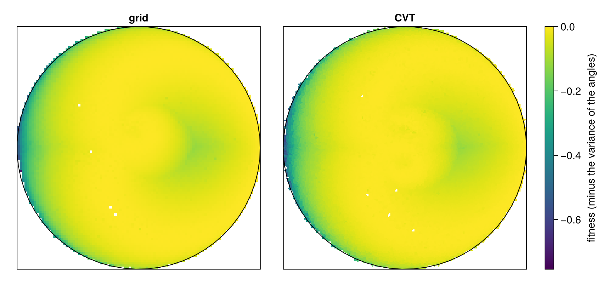
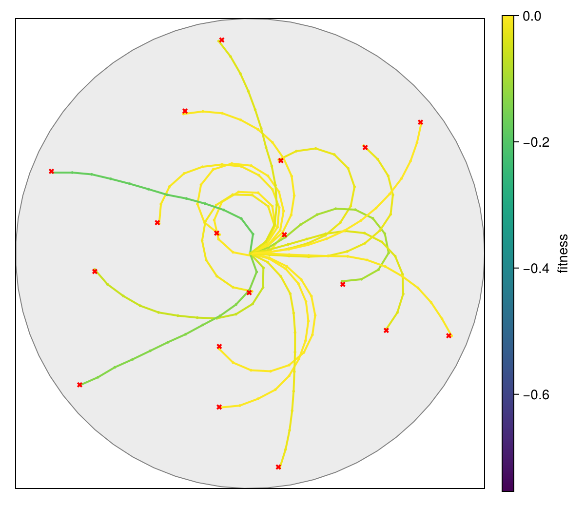

A repertoire of arm configurations
A planar arm has n links joined end to end, with its base fixed at the origin. Each joint angle is measured from the direction of the previous link, so the angles of a configuration add up along the arm. The goal is a repertoire: for every point the arm can reach, a configuration that reaches it, and among those the smoothest one, the one whose angles differ least from each other.
This is a standard benchmark of quality diversity (Cully and Mouret, 2013; Vassiliades et al., 2018), and the repertoire is the idea behind Cully et al. (2015, "Robots that can adapt like animals", Nature 521): a robot that has a map of many different behaviors, each done well, can pick another one from the map when it is damaged, instead of learning from scratch. The settings below are those of the pyribs tutorial Learning a Repertoire of Robot Arm Configurations, so the numbers can be set against it.
Set up once, from the repository root:
julia --project=examples -e 'using Pkg; Pkg.develop(path="."); Pkg.instantiate()'Run:
julia --project=examples examples/arm.jlusing QualityDiversity
using Random: AbstractRNG, Xoshiro
using StaticArrays: SVectorThe arm
The genotype is the vector θ of joint angles, each in [-π, π]. The link of joint i points in the direction θ₁ + … + θᵢ, so the tip lies at
x = Σᵢ Lᵢ cos(θ₁ + … + θᵢ), y = Σᵢ Lᵢ sin(θ₁ + … + θᵢ)for links of lengths Lᵢ. The tip is the descriptor; it lies in the disk of radius R = Σᵢ Lᵢ around the base. One pass over the joints accumulates the angle and the tip, without allocating, for any number of joints.
function tip(θ, lengths)
T = promote_type(Float64, eltype(θ))
angle, x, y = zero(T), zero(T), zero(T)
for i in eachindex(θ, lengths)
angle += θ[i]
s, c = sincos(angle)
x += lengths[i] * c
y += lengths[i] * s
end
return SVector(x, y)
endtip (generic function with 1 method)The fitness is minus the variance of the angles (divided by n, as NumPy's var), so zero is the best value, reached when all angles are equal and the arm bends as a circular arc.
function smoothness(θ)
m = sum(θ) / length(θ)
return -sum(t -> abs2(t - m), θ) / length(θ)
end
function arm_problem(n; lengths=ones(n))
length(lengths) == n || throw(ArgumentError("an arm of $n joints needs $n link lengths"))
R = sum(lengths)
random_angles(rng::AbstractRNG) = π .* (2 .* rand(rng, n) .- 1)
return QDProblem(θ -> (smoothness(θ), tip(θ, lengths)); init=random_angles,
bounds=((-R, R), (-R, R)))
endarm_problem (generic function with 1 method)As in pyribs, the arm has 12 links of length 1, so it reaches every point within 12 of its base.
const N_JOINTS = 12
const LENGTHS = ones(N_JOINTS)
const REACH = sum(LENGTHS)
prob = arm_problem(N_JOINTS; lengths=LENGTHS)The search
The pyribs tutorial runs CMA-ME: five CMA-ES searches of 30 solutions each, starting from the straight arm (x0 zero) with step size 0.1, ranked by two-stage improvement and kept within the joint limits, for 700 rounds, so 105 000 evaluations. Its archive has 10 000 Voronoi cells over the square [-12, 12]². We run the same, with pyribs's variant of CMA-ES, and the same search over a grid of 100 × 100 cells, also 10 000. Here the first 150 evaluations are random arms, which fill the archive before the first round, so the searches get one round fewer than in pyribs.
settings = (sigma0=0.1, n_emitters=5, batch_size=30, x0=zeros(N_JOINTS), lower=-π, upper=π,
strategy=QualityDiversity.PyribsCMAES)
grid = GridArchive(prob; dims=(100, 100))
cvt = CVTArchive(prob; cells=10_000, rng=Xoshiro(2))
budget = 700 * 5 * 30
results = ["grid" => solve(prob, CMAME(grid; dim=N_JOINTS, settings...); budget, rng=Xoshiro(1)),
"CVT" => solve(prob, CMAME(cvt; dim=N_JOINTS, settings...); budget, rng=Xoshiro(1))]How much of the reachable disk is covered
The disk of radius 12 covers only π/4 of the square, so coverage, the fraction of all cells that hold an elite, stays below about 0.8 however good the search. The fraction of reachable cells, those whose region meets the disk, says how much of what can be filled is filled. We find these cells by looking up the cell of a fine grid of points in the disk and of points along its rim, so a cell that touches the disk in a single point, where no elite can land, is not counted. Every occupied cell must be among them.
function reachable_cells(archive; n=1000)
cells = Set{Int}()
for x in range(-REACH, REACH; length=n), y in range(-REACH, REACH; length=n)
hypot(x, y) <= REACH && push!(cells, QualityDiversity.cell_index(archive, SVector(x, y)))
end
for φ in range(0, 2π; length=100n)
push!(cells, QualityDiversity.cell_index(archive, REACH * SVector(cos(φ), sin(φ))))
end
return cells
end
occupied_cells(archive) = Set(QualityDiversity.cell_index(archive, ev.descriptor)
for (_, ev) in QualityDiversity.elites(archive))occupied_cells (generic function with 1 method)The fitness lies between -π² (half the angles at -π, half at π) and zero, so π² is the offset of the QD score, which then counts every elite positively. pyribs's tutorial reports no QD score; its archive takes an offset of zero unless told otherwise.
table = map(results) do (name, r)
reachable = reachable_cells(r.archive)
occupied = occupied_cells(r.archive)
@assert occupied ⊆ reachable
return (archive=name, elites=length(r.archive), coverage=coverage(r.archive),
reachable_cells=length(reachable),
reachable_coverage=length(occupied) / length(reachable),
qd_score=qd_score(r.archive; offset=π^2), max_fitness=max_fitness(r.archive),
mean_fitness=mean_fitness(r.archive))
end2-element Vector{@NamedTuple{archive::String, elites::Int64, coverage::Float64, reachable_cells::Int64, reachable_coverage::Float64, qd_score::Float64, max_fitness::Float64, mean_fitness::Float64}}:
(archive = "grid", elites = 7910, coverage = 0.791, reachable_cells = 8024, reachable_coverage = 0.9857926221335992, qd_score = 77730.78788886307, max_fitness = -8.04093231292039e-5, mean_fitness = -0.04270327733928554)
(archive = "CVT", elites = 7894, coverage = 0.7894, reachable_cells = 8011, reachable_coverage = 0.9853950817625765, qd_score = 77574.18478593728, max_fitness = -0.00028757267286849946, mean_fitness = -0.04262381001546884)The pyribs tutorial ends with 7 928 elites in its CVT archive and a best fitness of about -1.4e-4.
The archive
Each heatmap shows the fitness of the elite of every cell, with the reachable disk outlined. The pattern can be predicted, which makes it a check that the search works. Equal angles cost nothing, and they bend the arm into an arc of a regular polygon: angles of zero point it straight along the x axis, and angles of 2π/12 close it into a dodecagon whose tip is back at the base. Between the two, such arcs reach much of the disk at fitness zero. On the rim the arm has to be straight, so only the first joint may turn: to reach the rim at angle φ it takes θ₁ = φ and the rest zero, a fitness of -φ²(n - 1)/n². The rim is therefore bright on the right, where φ is near zero, and darkest on the left, at -π² · 11/144 ≈ -0.75, which sets the bottom of the color scale.
using CairoMakie
colorrange = (-π^2 * (N_JOINTS - 1) / N_JOINTS^2, 0)
fig = Figure(size=(820, 380))
for (column, (name, r)) in enumerate(results)
ax = Axis(fig[1, column]; title=name, aspect=1, limits=(-REACH, REACH, -REACH, REACH))
heatmap!(ax, r.archive; colorrange)
lines!(ax, Circle(Point2f(0, 0), REACH); color=:black, linewidth=1)
hidedecorations!(ax)
end
Colorbar(fig[1, 3]; colorrange, label="fitness (minus the variance of the angles)")
fig
Arms from the repertoire
The repertoire tells how to reach a point: take the elite whose tip is nearest to it. We draw the elites of the grid nearest to points (crosses) on four circles around the base, colored by fitness. The arms are close to circular arcs that turn the same way at every joint; the ones that reach the left of the rim are the straightest and turn hardest at the base.
function joints(θ, lengths)
points = [Point2f(0, 0)]
angle = 0.0
for i in eachindex(θ, lengths)
angle += θ[i]
push!(points, points[end] + Point2f(lengths[i] * cos(angle), lengths[i] * sin(angle)))
end
return points
end
function nearest_elite(archive, target)
(θ, _) = argmin(((θ, ev),) -> hypot((ev.descriptor - target)...),
QualityDiversity.elites(archive))
return θ
end
targets = [r * SVector(cos(φ), sin(φ)) for (r, k) in ((2.0, 3), (5.0, 4), (8.0, 5), (11.0, 6))
for φ in range(0, 2π; length=k + 1)[1:k] .+ r / 4]
archive = last(results[1]).archive
fig = Figure(size=(600, 520))
ax = Axis(fig[1, 1]; aspect=1, limits=(-REACH, REACH, -REACH, REACH))
poly!(ax, Circle(Point2f(0, 0), REACH); color=(:gray, 0.15), strokecolor=:gray, strokewidth=1)
colormap = Makie.to_colormap(:viridis)
for target in targets
θ = nearest_elite(archive, target)
color = Makie.interpolated_getindex(colormap, smoothness(θ), colorrange)
scatterlines!(ax, joints(θ, LENGTHS); color, markersize=4, linewidth=2)
end
scatter!(ax, [Point2f(t...) for t in targets]; marker=:xcross, color=:red, markersize=8)
hidedecorations!(ax)
Colorbar(fig[1, 2]; colorrange, label="fitness")
fig